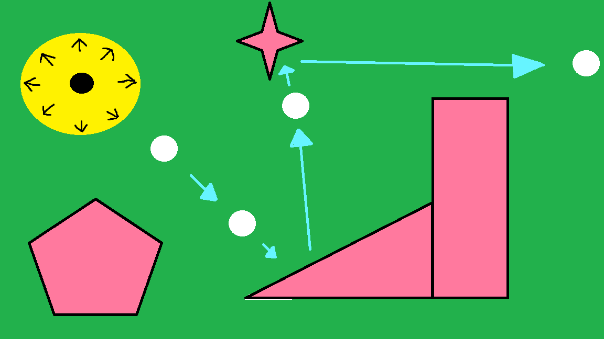

Chapter 1: No Skill

Here's the thing...The silly looking bouncer is so small and has so many directions it sends it is impossible to ever skillfully hit it. The teensy tiny black arrows aren't really visible. I need glasses to drive so how should I be expected to play mini golf. The thing just goes bingo bongo if touch it and sends you whatever direction it wants. Game Pigeon should do a better job making mini golf an enjoyable for all people, seeing people and not seeing people alike. Bad game design. No debate. It is dumb.
Chapter 2: Doo-doo Power Scaling

Here's the other thing...you could be making an absolute crispy shot that is landing right next to the hole. You get excited but then you see the dreaded banana looking circle of death and just before your ball reaches V = 0 you touch the bouncer and WHAM!! You don't know how but you've hit 16 walls and ended up further away from the hole than you started all before you could even say bingo bongo. The bouncer needs its repulsing powers to be tuned to the power it is hit with. Bad game design. No debate. It is dumb.
Chapter 3: Alison Doesn't Like it

A here's the most important thing...This is Alison ↑. She plays Game Pigeon Mini Golf. She isn't very good at Game Pigeon Mini Golf. but let's be clear, it's not her fault she's bad at Game Pigeon Mini Golf...It's the bouncer's fault. If there was no bouncer maybe she would be able to beat Benjamin at mini golf. Sadly it exists and she doesn't like it...
Game Pigeon, please hear us. Remove the bouncer from your somewhat successful game Mini Golf. The thing adds no skill to the game, it is stupidly designed and Alison doesn't like it. Please remove it to save millions of players awful mini golf skills, and a few select others sanity. Thank You.